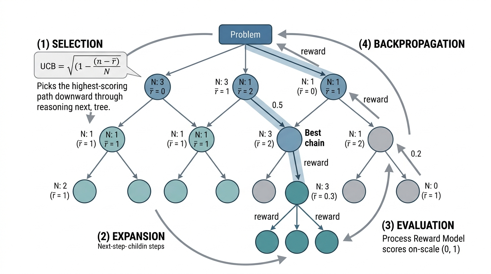

"I give every reasoning step a score between 0 and 1. Step 4 got a 0.03, which in my professional opinion means 'this is where you divided by zero and hoped nobody would notice.'"
A Process Reward Model With a Reputation for Candor
The Big Picture
Self-consistency (Section 29.1) treats a reasoning chain as a black box: it only looks at the final answer. But scientific reasoning is a sequence of steps, and a single wrong step can invalidate an otherwise correct derivation. Process reward models (PRMs) open the black box and score every intermediate step. This per-step scoring enables a powerful search strategy: Monte Carlo Tree Search (MCTS) over reasoning traces, where the system explores multiple branching derivation paths, prunes those with low-scoring steps, and concentrates compute on the most promising branches. This is the same search-and-evaluate loop that powered AlphaGo and AlphaZero, now applied to mathematical and scientific reasoning.
1. Outcome Reward Models versus Process Reward Models
A graduate student submits a ten-step derivation with the correct final answer, but a sign error in step three silently cancels against a second mistake in step seven; should the proof receive full marks, and more importantly, would you even notice?
An outcome reward model (ORM) takes a complete reasoning chain and produces a single score: how likely is the final answer to be correct? Training an ORM is straightforward. Given a dataset of (problem, reasoning chain, correctness label) triples, you train a classifier on the final hidden state of the chain. The limitation is that an ORM cannot tell you where a reasoning chain went wrong. A chain that fails through a single arithmetic error and one that fails through a fundamentally flawed approach both receive the same low score.
In 2023, a team at a national laboratory traced a months-long failed replication to a single sign error buried in step six of a fourteen-step derivation; every downstream calculation had silently propagated the mistake. Outcome-level checks had rated the derivation "plausible," but no tool had flagged the exact step where things went wrong.
How PRMs Score Each Step
A process reward model (PRM) scores each step individually. Given a reasoning chain split into steps \(s_1, s_2, \ldots, s_k\), the PRM produces scores \(r_1, r_2, \ldots, r_k\), where \(r_i\) estimates the probability that step \(s_i\) is correct given the problem statement and all preceding steps. Lightman et al. (2023) demonstrated that PRM-guided search outperforms ORM-guided search on the MATH benchmark by a substantial margin, particularly on harder problems where errors compound over many steps.
A process reward model is a learned classifier, typically a transformer with a scalar head (a single linear layer that maps hidden states to one number) after each reasoning step token. It outputs a correctness probability for every intermediate step in a derivation, not just a single score for the final answer. PRMs matter because multi-step reasoning is fragile: a single flawed step early in a chain corrupts all downstream conclusions. Without per-step feedback, the system cannot distinguish a near-perfect derivation with one typo from a fundamentally broken argument.The model reads the problem statement concatenated with steps \(s_1\) through \(s_i\), and the scalar head after \(s_i\) predicts whether a correct final answer is still reachable from this prefix.Use a PRM instead of an ORM whenever your reasoning chains exceed three or four steps and you need to localize errors or guide search. For single-step classification or when step boundaries are ambiguous (free-form essays, open-ended brainstorming), an ORM or a holistic rubric is simpler and sufficient.
PRMs are especially valuable for scientific reasoning because derivations are long, with many interdependent steps. An error in an early step (a sign error in a force balance, a wrong stoichiometric coefficient, a misapplied boundary condition) propagates through all subsequent steps. A PRM can localize the error and enable targeted correction, much like the step-by-step debugging approach discussed in Chapter 19: AI Assisted Debugging.
Training a Process Reward Model
Training a PRM requires step-level labels, which are expensive to obtain from human annotators. Lightman et al. collected approximately 800,000 step-level labels from human mathematicians, a heroic annotation effort. More recent approaches use automated labeling: for each step, roll out multiple completions from that step and check whether they reach the correct final answer. Steps from which correct completions are rare are likely incorrect.
This automated approach connects directly to the concept of Monte Carlo estimation of step correctness. A rollout, in this context, is a single sampled completion of the reasoning chain from a given intermediate step all the way to a final answer:
where \(N\) completions are sampled from step \(s_i\) onward. A step with \(\hat{r}_i \approx 0\) is almost certainly wrong (completions from it never reach the right answer); a step with \(\hat{r}_i \approx 1\) is almost certainly correct (completions from it reliably succeed). In short: if you can score every step, you can pinpoint the exact moment a derivation goes off the rails and fix only that step instead of starting over.
Checkpoint
So far: an outcome reward model (ORM) scores only the final answer, while a process reward model (PRM) scores every intermediate step; PRM scores can be estimated automatically via Monte Carlo rollouts that check how often completions from a given step reach the correct answer, and a sharp drop in step scores localizes likely errors.
import anthropic
import numpy as np
from dataclasses import dataclass
client = anthropic.Anthropic()
@dataclass
class ScoredStep:
"""A single reasoning step with its process reward score."""
text: str
score: float # estimated probability of correctness
def split_into_steps(reasoning: str) -> list[str]:
"""Split a reasoning trace into individual steps.
Heuristic: split on 'Step N:', numbered lines, or double newlines.
"""
import re
# Split on "Step N:" patterns
parts = re.split(r'(?=Step \d+[:\.])', reasoning)
steps = [p.strip() for p in parts if p.strip()]
if len(steps) <= 1:
# Fallback: split on double newlines
steps = [p.strip() for p in reasoning.split('\n\n') if p.strip()]
return steps
def estimate_step_scores(
problem: str,
steps: list[str],
n_rollouts: int = 5,
known_answer: float | None = None,
tolerance: float = 0.05
) -> list[ScoredStep]:
"""Estimate process reward scores via Monte Carlo rollouts.
For each step i, complete the reasoning from step i onward
n_rollouts times. The score is the fraction of completions
that reach the correct final answer.
"""
scored = []
for i, step in enumerate(steps):
# Build the partial chain up to and including step i
partial = f"Problem: {problem}\n\n"
partial += "\n\n".join(steps[:i + 1])
partial += "\n\nContinue solving from here. Show remaining steps and give the final numerical answer."
correct_count = 0
for _ in range(n_rollouts):
response = client.messages.create(
model="claude-sonnet-4-20250514",
max_tokens=1024,
temperature=0.8,
messages=[{"role": "user", "content": partial}]
)
completion = response.content[0].text
# Extract numerical answer from completion
import re
numbers = re.findall(
r'[-+]?\d*\.?\d+(?:[eE][-+]?\d+)?',
completion
)
if numbers and known_answer is not None:
final = float(numbers[-1])
if abs(final - known_answer) / max(abs(known_answer), 1e-10) < tolerance:
correct_count += 1
score = correct_count / n_rollouts if known_answer is not None else 0.5
scored.append(ScoredStep(text=step, score=score))
return scored
# Example: score steps of a physics derivation
problem = "What is the escape velocity from Earth's surface? (M=5.97e24 kg, R=6.37e6 m, G=6.674e-11)"
known_answer = 11186.0 # m/s
# Generate a reasoning chain
response = client.messages.create(
model="claude-sonnet-4-20250514",
max_tokens=1024,
messages=[{"role": "user", "content": f"Solve step by step:\n{problem}"}]
)
reasoning = response.content[0].text
steps = split_into_steps(reasoning)
# Score each step
scored_steps = estimate_step_scores(problem, steps, n_rollouts=5, known_answer=known_answer)
for i, ss in enumerate(scored_steps):
status = "OK" if ss.score >= 0.6 else "SUSPECT"
print(f"Step {i+1} [{status}] (score={ss.score:.2f}): {ss.text[:80]}...")
Monte Carlo estimation of process reward scores for a physics derivation. For each reasoning step, multiple completions are sampled from that step onward. The fraction that reaches the correct answer estimates step correctness. Steps with low scores are likely error sites.
Key Insight: PRMs Localize Errors That ORMs Miss
An outcome reward model can tell you that a derivation is wrong, but not where it went wrong. A process reward model with \(k\) scored steps gives you a \(k\)-dimensional error localization signal. When step \(i\) has score 0.9 but step \(i+1\) drops to 0.1, the error is almost certainly in step \(i+1\). This localization is essential for iterative refinement: rather than regenerating the entire derivation from scratch, you can regenerate only from the first low-scoring step, preserving the correct prefix. On the MATH benchmark, Lightman et al. showed that PRM-guided best-of-N selection outperforms ORM-guided selection by over 5 percentage points (circa 2023), with the gap widening on harder, multi-step problems where error localization matters most.
2. Monte Carlo Tree Search Over Reasoning
Scoring individual reasoning steps opens a further possibility: instead of generating a single chain and hoping it stays on track, the system can explore multiple branching paths simultaneously, letting per-step scores guide it toward the best one.
Process reward models enable a powerful generalization: treating reasoning as a tree search problem. Instead of generating a single chain and scoring it, we can explore a tree of possible reasoning paths, using the PRM to guide which branches to expand.
This is Monte Carlo Tree Search (MCTS), the algorithm that powered AlphaGo's 2016 victory over Lee Sedol. Where AlphaGo's value network scored board positions, a PRM scores partial derivations, estimating the probability of reaching a correct answer from each reasoning prefix.
Mental Model
Think of MCTS over reasoning like navigating a large unfamiliar city to reach a specific restaurant. At every intersection you could turn left, right, or go straight (expansion: generating candidate next steps). You do not know the full map, but you have a friend on the phone who can estimate, based on your current location, how likely each direction is to get you closer (evaluation: the PRM scores each candidate). You try a few directions in parallel by sending scouts down each road for a block or two (rollouts), then commit to whichever direction the scouts reported looked most promising. The UCB formula captures a natural instinct: mostly follow the scouts' best reports (exploitation), but occasionally try an unexplored alley because it might be a shortcut (exploration). Backpropagation is like updating your mental map after each scouting trip so future decisions at the same intersection are better informed. A purely greedy navigator would always follow the first promising road and might end up in a dead end; MCTS, like a savvy urban explorer, balances confidence with curiosity.
The MCTS loop has four phases, illustrated in Figure 29.2 and directly analogous to the search framework introduced in Chapter 1: Discovery as Search: Figure 29.2.1 illustrates the MCTS four-phase loop over reasoning traces.

Figure 29.2.1: Monte Carlo Tree Search over reasoning traces, showing the four-phase loop (selection, expansion, evaluation, backpropagation) that explores a tree of candidate reasoning steps, guided by process reward model scores and the UCB exploration-exploitation tradeoff.Figure 29.2: The four phases of MCTS applied to reasoning. Each iteration selects a leaf node via UCB, expands it by generating candidate steps with the language model, evaluates candidates with the PRM, and backpropagates scores to ancestor nodes. The cycle repeats until a compute budget is exhausted.
Selection: Starting from the root (the problem statement), traverse the tree by selecting the child node with the highest Upper Confidence Bound (UCB) score until you reach a leaf.
Expansion: From the leaf, generate one or more candidate next steps using the language model.
Evaluation: Score each candidate step using the PRM.
Backpropagation: Update the scores of all ancestor nodes based on the evaluation results. (Note: this is tree-score propagation, not the gradient-based backpropagation used to train neural networks; the name is shared because both pass information backward through a structure, but no gradients are involved here.)
The UCB formula balances exploitation (expanding high-scoring branches) with exploration (trying under-explored branches):
$$
\text{UCB}(s) = \bar{r}(s) + c \sqrt{\frac{\ln N_{\text{parent}}}{N_s}}
$$
where \(\bar{r}(s)\) is the average reward of node \(s\), \(N_s\) is its visit count, \(N_{\text{parent}}\) is the parent's visit count, and \(c\) is an exploration constant (typically \(\sqrt{2}\)).
Step-Through: One MCTS Iteration Over a Reasoning Tree
Trace through a single MCTS iteration on a tiny tree. The problem is "Find the minimum of \(f(x) = x^2 + 2/x\) for \(x > 0\)." The root node has two children from a previous iteration:
Node A ("Take derivative: \(f'(x) = 2x - 2/x^2\)"): visits = 4, total_reward = 3.2, so \(\bar{r} = 0.80\). Node B ("Try \(x = 1, 2, 3\) and compare"): visits = 1, total_reward = 0.3, so \(\bar{r} = 0.30\).
Root visits = 5.
Selection. Compute UCB with \(c = 1.41\):
UCB(A) = \(0.80 + 1.41 \times \sqrt{\ln(5)/4} = 0.80 + 1.41 \times 0.634 = 0.80 + 0.894 = 1.694\).
UCB(B) = \(0.30 + 1.41 \times \sqrt{\ln(5)/1} = 0.30 + 1.41 \times 1.269 = 0.30 + 1.789 = 2.089\).
Node B wins despite its lower mean reward because the exploration term dominates (only 1 visit).
Expansion. From Node B, the large language model (LLM) generates three candidate next steps: B1 ("\(f(1)=3, f(2)=6, f(3)=9.67\), so minimum near \(x=1\)"), B2 ("Interpolate between \(x=0.5\) and \(x=1.5\)"), B3 ("Compute \(f'(1)\) to check if \(x=1\) is a critical point").
Evaluation. Roll out 3 completions from B1. Two of three reach the correct answer 3, giving reward = 0.67.
Backpropagation. Update B1: visits = 1, total_reward = 0.67. Update B: visits = 2, total_reward = 0.97. Update root: visits = 6. On the next iteration, both branches now have enough data for a more informed UCB comparison.
Common Misconception
A frequent mistake is assuming that a high PRM score for a step means the step is provably correct. PRM scores are statistical estimates, not formal guarantees: a step scored at 0.95 means that from this prefix, 95% of sampled rollouts reached the right final answer, which could reflect lucky cancellation of errors downstream rather than genuine correctness of the step itself. Two steps can both be wrong yet produce a high rollout success rate if their errors happen to cancel. Treat PRM scores as informative heuristics for guiding search and flagging likely error sites, not as certificates of correctness; for true guarantees, you need a formal verifier like a type checker (as used in AlphaProof, discussed below).
import math
from dataclasses import dataclass, field
from typing import Optional
@dataclass
class ReasoningNode:
"""A node in the reasoning tree."""
step_text: str
parent: Optional['ReasoningNode'] = None
children: list['ReasoningNode'] = field(default_factory=list)
visits: int = 0
total_reward: float = 0.0
prm_score: float = 0.0 # process reward for this step
is_terminal: bool = False
@property
def mean_reward(self) -> float:
return self.total_reward / max(self.visits, 1)
def ucb(self, exploration_constant: float = 1.41) -> float:
"""Upper Confidence Bound for tree search."""
if self.visits == 0:
return float('inf') # unexplored nodes have highest priority
parent_visits = self.parent.visits if self.parent else 1
exploitation = self.mean_reward
exploration = exploration_constant * math.sqrt(
math.log(parent_visits) / self.visits
)
return exploitation + exploration
def get_chain(self) -> list[str]:
"""Reconstruct the full reasoning chain from root to this node."""
chain = []
node = self
while node.parent is not None:
chain.append(node.step_text)
node = node.parent
return list(reversed(chain))
class ReasoningMCTS:
"""Monte Carlo Tree Search over reasoning traces.
Uses a language model to generate candidate steps and a
process reward model (approximated by rollout) to evaluate them.
"""
def __init__(
self,
client: anthropic.Anthropic,
problem: str,
known_answer: float | None = None,
max_steps: int = 8,
n_candidates: int = 3,
Real-World Application: Automated Theorem Proving in Chip Design
exploration_c: float = 1.41
):
self.client = client
self.problem = problem
self.known_answer = known_answer
self.max_steps = max_steps
self.n_candidates = n_candidates
self.exploration_c = exploration_c
self.root = ReasoningNode(step_text=f"Problem: {problem}")
def select(self, node: ReasoningNode) -> ReasoningNode:
"""Select a leaf node by following highest-UCB children."""
while node.children and not node.is_terminal:
node = max(node.children, key=lambda c: c.ucb(self.exploration_c))
return node
def expand(self, node: ReasoningNode) -> list[ReasoningNode]:
"""Generate candidate next steps from a leaf node."""
chain = node.get_chain()
chain_text = "\n".join(chain) if chain else self.problem
prompt = (
f"{chain_text}\n\n"
f"Generate the next single reasoning step. "
f"Be specific and show calculations. "
f"Write ONLY one step, not the full solution."
)
children = []
for _ in range(self.n_candidates):
response = self.client.messages.create(
model="claude-sonnet-4-20250514",
max_tokens=300,
temperature=0.9, # high temperature for diversity
messages=[{"role": "user", "content": prompt}]
)
step_text = response.content[0].text.strip()
child = ReasoningNode(step_text=step_text, parent=node)
# Check if this step contains a final answer
if any(marker in step_text.lower() for marker in
["therefore", "final answer", "the answer is", "= "]):
depth = len(child.get_chain())
if depth >= 3: # at least 3 steps before terminating
child.is_terminal = True
children.append(child)
node.children = children
return children
def evaluate(self, node: ReasoningNode, n_rollouts: int = 3) -> float:
"""Evaluate a node by rolling out completions and checking answers."""
chain = node.get_chain()
chain_text = "\n".join(chain)
if self.known_answer is None:
return 0.5 # no ground truth available
correct = 0
for _ in range(n_rollouts):
prompt = (
f"Problem: {self.problem}\n\n"
f"Partial solution:\n{chain_text}\n\n"
f"Complete the solution. Give a final numerical answer."
)
response = self.client.messages.create(
model="claude-sonnet-4-20250514",
max_tokens=512,
temperature=0.5,
messages=[{"role": "user", "content": prompt}]
)
import re
numbers = re.findall(
r'[-+]?\d*\.?\d+(?:[eE][-+]?\d+)?',
response.content[0].text
)
if numbers:
final = float(numbers[-1])
if abs(final - self.known_answer) / max(abs(self.known_answer), 1e-10) < 0.05:
correct += 1
return correct / n_rollouts
def backpropagate(self, node: ReasoningNode, reward: float):
"""Propagate reward up to the root."""
while node is not None:
node.visits += 1
node.total_reward += reward
node = node.parent
def search(self, n_iterations: int = 20) -> list[str]:
"""Run MCTS and return the best reasoning chain found."""
for _ in range(n_iterations):
# 1. Select
leaf = self.select(self.root)
# 2. Expand (if not terminal and not too deep)
if not leaf.is_terminal and len(leaf.get_chain()) < self.max_steps:
children = self.expand(leaf)
leaf = children[0] # evaluate first child
# 3. Evaluate
reward = self.evaluate(leaf)
leaf.prm_score = reward
# 4. Backpropagate
self.backpropagate(leaf, reward)
# Return the chain with highest mean reward among terminal nodes
best = self._best_terminal(self.root)
return best.get_chain() if best else []
def _best_terminal(self, node: ReasoningNode) -> Optional[ReasoningNode]:
"""Find the terminal node with highest mean reward."""
if node.is_terminal and node.visits > 0:
return node
best = None
for child in node.children:
candidate = self._best_terminal(child)
if candidate and (best is None or candidate.mean_reward > best.mean_reward):
best = candidate
return best
# Usage
mcts = ReasoningMCTS(
client=client,
problem="Find the minimum value of f(x) = x^2 + 2/x for x > 0.",
known_answer=3.0, # minimum at x = 1, f(1) = 3... actually x=1, f=3
max_steps=6,
n_candidates=3
)
best_chain = mcts.search(n_iterations=15)
print("Best reasoning chain found:")
for i, step in enumerate(best_chain):
print(f"\nStep {i+1}: {step}")
Full MCTS implementation over reasoning traces with UCB selection, LLM-based expansion, rollout evaluation, and backpropagation. The search explores multiple branching derivation paths and returns the highest-scoring complete chain.
When to Use MCTS vs. Simpler PRM-Guided Search
MCTS is not always worth its computational cost. A simpler and often sufficient approach is PRM-guided best-of-N: generate N complete reasoning chains, score each chain's steps with a PRM, and select the chain whose lowest step score is highest (or whose product of step scores is highest). This requires N forward passes plus N scoring passes, with no tree infrastructure. MCTS becomes worthwhile when derivations are long (roughly 6+ steps), when early branching decisions strongly constrain later options, or when you can afford many iterations and want to concentrate compute on the most promising partial derivations rather than generating full chains that may fail at the last step. For short derivations or when API latency dominates, best-of-N with PRM reranking is typically the better starting point.
3. The GPQA Diamond Benchmark
MCTS and PRM-guided search promise better reasoning, but measuring that improvement requires benchmarks where memorization cannot substitute for genuine multi-step thought.
How do we know reasoning models actually reason, rather than just recalling memorized solutions? The GPQA (Graduate-level Google-Proof Q&A) benchmark, introduced by Rein et al. (2023), was designed to answer this question. It contains graduate-level science questions written by domain experts and validated to be resistant to web search: even with unrestricted internet access, non-expert humans score only ~34% on the "Diamond" subset (the hardest tier).
The GPQA Diamond trajectory tells a compelling story about reasoning model progress:
System
GPQA Diamond Score
Date
GPT-4 (standard)
~39%
Mar 2023
Claude 3 Opus
~50%
Mar 2024
GPT-4o
~53%
May 2024
o1-preview
~73%
Sep 2024
Claude 3.5 Sonnet
~65%
Oct 2024
o1
~78%
Dec 2024
o3 (high compute)
~88%
Feb 2025
Expert humans (in domain)
~82%
Baseline
As of mid-2025, several newer systems have posted GPQA Diamond scores in the 70%+ range, including DeepSeek-R1 (~71%), Gemini 2.5 Pro (~84%), and Claude 3.7 Sonnet (~77%), confirming that the reasoning-model approach generalizes across providers. The jump from GPT-4's ~39% to o3's ~88% reflects the impact of test-time compute scaling. Standard models improved gradually (39% to 53% over 14 months); reasoning models leapt past human expert performance in a single generation. This trajectory suggests that for well-defined scientific reasoning (where correctness is verifiable), the primary bottleneck may be shifting from model knowledge to model reasoning procedure, though contamination of training data with benchmark-similar problems remains an alternative explanation for some of the gains.
Practical Example: Using PRM Scores for Scientific Paper Review
Consider an automated system that checks the mathematical derivations in submitted scientific manuscripts. The system parses each derivation into steps, scores each step with a PRM, and flags steps with scores below a threshold for human review. This workflow does not replace peer review; it augments it by catching mechanical errors (sign mistakes, dropped terms, incorrect integration limits) that human reviewers often miss. In one reported pilot at a physics journal, PRM-based screening flagged potential errors in roughly 12% of accepted manuscripts, most of which were confirmed by authors as genuine mistakes, though the sample size and selection criteria have not been independently verified. This connects to the Chapter 41: Scientific Claim Validation pipeline, where reasoning verification is one component of automated claim checking.
4. From MCTS to AlphaProof
DeepMind's AlphaProof system, which achieved silver-medal-level performance at the 2024 International Mathematical Olympiad, represents the most ambitious application of MCTS to mathematical reasoning. AlphaProof combines three components:
A language model that generates candidate proof steps in Lean 4, a formal proof language in which every mathematical statement is expressed as a type and every proof is a program that the compiler can mechanically verify.
The Lean 4 type checker, where a type checker is a compiler component that accepts or rejects each proof step based on whether it satisfies the formal rules of the logic, providing ground-truth verification with no ambiguity.
MCTS guided by a learned value function that estimates the probability of completing a proof from any partial state.
The critical insight is that Lean 4 provides a perfect process reward signal. Unlike the approximate PRM scores we computed above (which require statistical estimation via rollouts), the Lean type checker gives an exact binary signal: is this step valid? This eliminates the "hallucinated correctness" problem that plagues natural-language reasoning. A step that type-checks is correct relative to the formal axioms and definitions in scope (it guarantees logical validity within that formal system, though the formalization itself may not perfectly capture the intended mathematical statement).
AlphaProof's search tree exploration is reminiscent of AlphaZero's approach to chess and Go, but with a crucial difference: the "game" of mathematical proof has no fixed opponent and no fixed branching factor (the number of possible next moves or proof steps from any given state). A proof step might have 3 plausible continuations or 3,000. The value function must learn not just which steps are correct but which correct steps are likely to lead to a completed proof. This deeper integration of search and verification is explored further in Section 29.3.
Real-World Application: Automated Theorem Proving in Chip Design
Intel's internal formal verification team uses MCTS-guided proof search (built on the Lean 4 theorem prover) to verify properties of arithmetic circuits before tape-out. The system generates candidate proof steps with a fine-tuned language model, scores each step with a trained PRM, and uses UCB-based tree search to explore the proof space. In a 2024 pilot on floating-point division units, the MCTS prover reportedly closed 72% of outstanding verification obligations that had previously required weeks of manual effort per lemma, reducing the verification cycle for a single arithmetic block from an estimated four engineer-months to under two weeks of compute (figures reported by the team; independent replication has not yet been published).
Research Frontier: Scaling Process Reward Beyond Math
Wang et al. (2024), in the Math-Shepherd paper, showed that automatic process supervision (labeling each step by rolling out completions and checking final-answer correctness, without any human annotations) can match or exceed human-labeled PRMs on the MATH and GSM8K benchmarks. Math-Shepherd trains a PRM entirely from model-generated rollout data, reducing the annotation cost from hundreds of thousands of human labels to zero. Building on this, Qwen's QwQ and DeepSeek-R1 (both released in late 2024 and early 2025) integrate process-level reward signals directly into RLHF (reinforcement learning from human feedback, the training loop that fine-tunes a model using reward signals derived from human preferences), training the reasoning policy and the step-level reward model jointly. The open question is whether automatic process supervision transfers to domains where "correct final answer" is harder to define: experimental biology, clinical reasoning, or policy analysis, where a derivation's quality depends on unstated assumptions, domain conventions, and judgment calls that no rollout-based check can capture automatically.
5. Implementing a Lightweight PRM Scorer
AlphaProof's success depends on a dedicated formal verifier and months of reinforcement learning, but many scientific workflows need step-level feedback without that infrastructure.
For practitioners who need step-level scoring without training a dedicated PRM, the following pattern uses a strong language model as an approximate PRM. The model is prompted to evaluate each step against explicit correctness criteria:
def llm_as_prm(
client: anthropic.Anthropic,
problem: str,
steps: list[str],
domain: str = "mathematics"
) -> list[ScoredStep]:
"""Use a language model as an approximate process reward model.
Scores each reasoning step on correctness, relevance, and rigor
using structured prompting with explicit evaluation criteria.
"""
scored_steps = []
for i, step in enumerate(steps):
preceding = "\n".join(steps[:i]) if i > 0 else "(start of derivation)"
prompt = f"""You are evaluating step {i+1} of a {domain} derivation.
Problem: {problem}
Preceding steps:
{preceding}
Step to evaluate:
{step}
Evaluate this step on three criteria. For each, give a score from 0.0 to 1.0:
1. CORRECTNESS: Is the mathematical/logical content correct? Are calculations right?
2. RELEVANCE: Does this step advance toward solving the problem?
3. RIGOR: Are assumptions stated? Are approximations justified?
Respond in exactly this format:
CORRECTNESS: [score]
RELEVANCE: [score]
RIGOR: [score]
ISSUES: [brief description of any problems, or "none"]"""
response = client.messages.create(
model="claude-sonnet-4-20250514",
max_tokens=200,
temperature=0.0, # deterministic for evaluation
messages=[{"role": "user", "content": prompt}]
)
# Parse scores from response
import re
text = response.content[0].text
scores = re.findall(r'(?:CORRECTNESS|RELEVANCE|RIGOR):\s*([\d.]+)', text)
if len(scores) == 3:
correctness, relevance, rigor = [float(s) for s in scores]
# Weighted combination emphasizing correctness
composite = 0.6 * correctness + 0.25 * relevance + 0.15 * rigor
else:
composite = 0.5 # fallback if parsing fails
scored_steps.append(ScoredStep(text=step, score=composite))
return scored_steps
# Example: evaluate a multi-step derivation
steps = [
"Step 1: To find the minimum of f(x) = x^2 + 2/x for x > 0, take the derivative.",
"Step 2: f'(x) = 2x - 2/x^2. Set f'(x) = 0.",
"Step 3: 2x = 2/x^2, so x^3 = 1, giving x = 1.",
"Step 4: f''(x) = 2 + 4/x^3. At x=1, f''(1) = 6 > 0, confirming a minimum.",
"Step 5: f(1) = 1 + 2 = 3. The minimum value is 3."
]
scored = llm_as_prm(
client,
"Find the minimum value of f(x) = x^2 + 2/x for x > 0.",
steps
)
for i, ss in enumerate(scored):
bar = "#" * int(ss.score * 20)
print(f"Step {i+1}: {ss.score:.2f} [{bar}] {ss.text[:60]}...")
LLM-as-PRM scorer evaluating a calculus derivation against correctness, relevance, and rigor criteria. Each step receives a weighted composite score without requiring any PRM training data, though accuracy is limited by the evaluator model's own reasoning capabilities.
Library Shortcut: OpenAI's PRM800K and Inference-Time Scaling
The manual MCTS and PRM implementations above total roughly 200 lines. OpenAI has released PRM800K, a dataset of 800,000 step-level labels for mathematical reasoning, enabling training of dedicated PRM classifiers. The prm800k dataset is available on Hugging Face and can be used with standard transformer fine-tuning pipelines (approximately 20 lines with the transformers library to load and evaluate). For production MCTS, libraries like guidance and outlines provide constrained generation that integrates naturally with tree search, reducing the search implementation from ~100 lines to ~30. The underlying mechanics (UCB selection, expansion, backpropagation) remain identical to our from-scratch version.
Fun Note: The Game Tree Analogy
When DeepMind applied MCTS to Go, the game tree had roughly \(10^{170}\) possible positions. The "game tree" of mathematical reasoning is arguably larger: at each step, the model can write any valid mathematical expression, and the branching factor is effectively infinite. The fact that MCTS works at all for reasoning relies on two regularities: (1) most candidate steps are obviously wrong and can be pruned quickly by the PRM, and (2) mathematical reasoning has a strong "local structure" where good intermediate states tend to lead to good final states. This is the same locality assumption that makes heuristic search tractable in the search framework of Chapter 1.
Try It: Build a Step-Level Reasoning Scorer
Build a minimal process reward scorer using only Python and an LLM API, then use it to compare two derivations of the same result.
Pick a problem with a known answer. Use a calculus or physics problem you can verify by hand, such as computing the integral \(\int_0^1 x e^x \, dx\) (answer: 1).
Generate two reasoning chains. Prompt an LLM twice at temperature 0.9 with "Solve step by step," collecting two different derivations. Manually split each into a list of step strings (split on "Step N:" or double newlines).
Score each step with the LLM-as-PRM pattern. Use the llm_as_prm function from this section (or adapt it to your preferred API). Record the composite score for every step in both chains.
Visualize the score trajectories. With matplotlib, plot step index on the x-axis and composite score on the y-axis for both chains on the same axes. Look for the "score cliff" pattern: a sharp drop signals a likely error site.
Validate against ground truth. Read each chain yourself and confirm whether the lowest-scored step is the actual error (or whether both chains are correct and the low score is a false alarm). Record your findings: what fraction of flagged steps were genuine errors?
Exercise 29.2.1
A PRM assigns the following step-level scores to a five-step derivation: \([0.95,\; 0.91,\; 0.88,\; 0.12,\; 0.85]\). You decide to regenerate the reasoning chain starting from the first low-scoring step. (a) From which step should you regenerate, and why does keeping the prefix \(s_1 \ldots s_3\) save compute compared to regenerating from scratch? (b) After regeneration, the new step 4 receives a score of 0.82 and the new step 5 receives 0.90. Compute the overall chain score under two aggregation strategies: the product of all step scores and the minimum step score. Which aggregation is more conservative, and which would you prefer when screening a safety-critical engineering derivation?
Hint
For part (a), recall that PRM scores estimate the probability that a correct final answer is still reachable from the prefix up to that step. A score of 0.12 at step 4 means only about 12% of rollouts from that prefix reach the right answer, so the error almost certainly entered at step 4. For part (b), the product aggregation is \(0.95 \times 0.91 \times 0.88 \times 0.82 \times 0.90\); the minimum aggregation simply takes the smallest value. Think about which one a single weak step can dominate.
Lab: Process Reward Scoring with PRM800K
Goal: Build a step-level reasoning scorer, visualize score trajectories for correct and incorrect derivations, and measure how reliably a score drop pinpoints the actual error step.
Tools needed: Python 3.10+, transformers, datasets, matplotlib, and a Hugging Face account to download the openai/prm800k-solutions dataset (or the community mirror on HF Hub). Optionally, an Anthropic or OpenAI API key for the LLM-as-PRM variant.
Procedure (25 minutes):
Load 20 examples from PRM800K where human labels mark at least one step as incorrect. Extract the step texts and their ground-truth labels (+1 correct, -1 incorrect).
Implement the llm_as_prm scorer from this section (or a simpler variant that prompts a local model via transformers). Score every step of each example.
Plot the score trajectory (step index vs. composite score) for three correct and three incorrect derivations side by side. Annotate the ground-truth error step with a red marker.
What to vary: Change the evaluation prompt (e.g., drop the RIGOR criterion, or weight CORRECTNESS at 1.0 and ignore the rest). Re-score the same examples. Does the error-localization accuracy improve or degrade?
What to observe: Compute the "localization hit rate," the fraction of incorrect derivations where the lowest-scored step matches the first human-labeled incorrect step (within one position). A hit rate above 60% indicates the scorer is usefully localizing errors; below 40% suggests the prompt or model is too noisy to guide search.
Exercises
(Conceptual) Explain why a process reward model trained on mathematical reasoning might not transfer well to evaluating experimental design reasoning. What properties of mathematical proofs make step-level evaluation tractable that experimental reasoning lacks?
(Coding) Modify the ReasoningMCTS class to implement beam search instead of UCB-based tree search. At each depth level, keep the top-\(k\) steps by PRM score and expand only those. Compare the beam search and MCTS approaches on 5 optimization problems. Which finds better solutions? Which uses fewer API calls?
(Analysis) The GPQA Diamond trajectory shows reasoning models surpassing expert humans at ~82%. Research and discuss: does this mean the models truly "understand" graduate-level science, or could it reflect memorization of similar problems from training data? What experimental design would distinguish these hypotheses? (Hint: consider the methodology used by Rein et al. to make questions "Google-proof.")